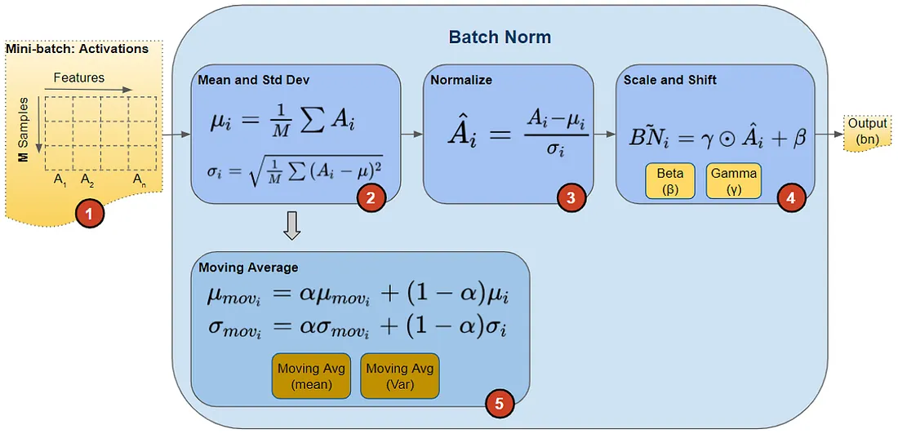
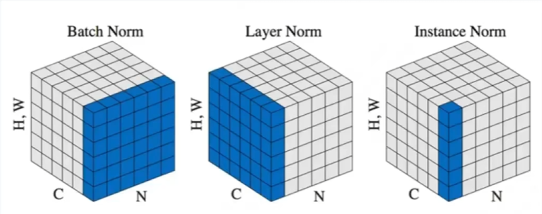

常见归一化方法(BN,LN,IN,GN)
BatchNorm
BatchNorm解决的问题
一方面但是，如果我们每一个batch输入的数据都具有不同的分布，显然会给网络的训练带来困难。另一方面，数据经过一层层网络计算后，其数据分布也在发生着变化，此现象称为Internal Covariate Shift，接下来会详细解释，会给下一层的网络学习带来困难。使得在较短的时间内使他们收敛更加棘手。批量规范化（batch normalization） (Ioffe and Szegedy, 2015)，这是一种流行且有效的技术，可持续加速深层网络的收敛速度
Internal Covariate Shift
covariate shift
Internal Covariate Shift发生在神经网络的内部，covariate shift发生在输入数据上，其主要描述的是由于训练数据和测试数据存在分布的差异性，给网络的泛化性和训练速度带来了影响，经常使用的方法是做归一化或者白化。
需要批量规范化层的原因：
- 数据预处理的方式通常会对最终结果产生巨大影响。
- 对于典型的多层感知机或卷积神经网络。当我们训练时，中间层中的变量（例如，多层感知机中的仿射变换输出）可能具有更广的变化范围：不论是沿着从输入到输出的层，跨同一层中的单元，或是随着时间的推移，模型参数的随着训练更新变幻莫测。 批量规范化的发明者非正式地假设，这些变量分布中的这种偏移可能会阻碍网络的收敛。
- 更深层的网络很复杂，容易过拟合。 这意味着正则化变得更加重要。
- 没有它之前，需要小心的调整学习率和权重初始化，但是有了BN可以放心的使用大学习率，但是使用了BN，就不用小心的调参了，较大的学习率极大的提高了学习速度
并不是在深度学习的所有领域都可以使用BatchNorm
BN的作用
- 加速SGD收敛(将batch里的数据分布变为一样)，效果与特征归一化一致。
- 使分布更稳定。
- 防止过拟合。有轻微正则化效果，BN的均值和方差是在mini batch上计算得到的，含有轻微噪音。将噪音添加到隐藏单元上，这迫使后部单元不依赖于任何⼀个隐藏单元(将Batch中所有样本都被关联在了一起，网络不会从某一个训练样本中生成确定的结果)，类似dropout。
- 解决梯度消失和梯度爆炸问题(使用BN后，网络的输出就不会很大，梯度就不会很小)。
- 提高激活函数准确度，增强优化器性能。
BN的缺点
- 高度依赖于batchsize的大小，实际使用中会对batchsize大小进行约束，不适合batchsize=1的情况。不适用于RNN，RNN的序列长度是不一致的
BatchNorm原理

批量规范化应用于单个可选层（也可以应用到所有层），其原理如下：在每次训练迭代中，我们首先规范化输入，即通过减去其均值并除以其标准差，其中两者均基于当前小批量处理。 接下来，我们应用比例系数和比例偏移
如果我们尝试使用大小为1的小批量应用批量规范化，我们将无法学到任何东西。 这是因为在减去均值之后，每个隐藏单元将为0。 所以，只有使用足够大的小批量，批量规范化这种方法才是有效且稳定的。 请注意，在应用批量规范化时，批量大小的选择可能比没有批量规范化时更重要。
用x∈B表示一个来自小批量B的输入，批量规范化BN根据以下表达式转换x：
是小批量B的样本均值，是小批量B的样本标准差。 应用标准化后，生成的小批量的平均值为0和单位方差为1。 由于单位方差（与其他一些魔法数）是一个主观的选择，因此我们通常包含 拉伸参数（scale）γ和偏移参数（shift）β，它们的形状与x相同。γ和β是需要与其他模型参数一起学习的参数，它们保证了每一次数据经过归一化后还保留的有学习来的特征，同时又能完成归一化这个操作，加速训练。
由于在训练过程中，中间层的变化幅度不能过于剧烈，而批量规范化将每一层主动居中，并通和将它们重新调整为给定的平均值和大小。
请注意，我们在方差估计值中添加一个小的常量ϵ>0，以确保我们永远不会尝试除以零，即使在经验方差估计值可能消失的情况下也是如此。估计和通过使用平均值和方差的噪声（noise）估计来抵消缩放问题。 乍看起来，这种噪声是一个问题，而事实上它是有益的。
优化中的各种噪声源通常会导致更快的训练和较少的过拟合：这种变化似乎是正则化的一种形式。 在一些初步研究中， (Teye et al., 2018)和 (Luo et al., 2018)分别将批量规范化的性质与贝叶斯先验相关联。 这些理论揭示了为什么批量规范化最适应50∼100范围中的中等批量大小的难题。
全连接层与卷积层的应用
批量规范化在完整的小批量上运行，因此我们不能像以前在引入其他层时那样忽略批量大小。 我们在下面讨论这两种情况：全连接层和卷积层。
- 对于全连接层，作用在特征维
- 对于卷积层，作用在通道维
全连接层
通常，我们将批量规范化层置于全连接层中的仿射变换和激活函数之间。
卷积层
对于卷积层，我们可以在卷积层之后和非线性激活函数之前应用批量规范化。
当卷积有多个输出通道时，我们需要对这些通道的“每个”输出执行批量规范化，每个通道都有自己的拉伸（scale）和偏移（shift）参数，这两个参数都是标量。 假设我们的小批量包含m个样本，并且对于每个通道，卷积的输出具有高度p和宽度q。 那么对于卷积层，我们在每个输出通道的m⋅p⋅q个元素上同时执行每个批量规范化。 因此，在计算平均值和方差时，我们会收集所有空间位置的值，然后在给定通道内应用相同的均值和方差，以便在每个空间位置对值进行规范化。
即对于所有的batch中样本的同一个channel的数据元素进行标准化处理，即如果有C个通道，无论batch中有多少个样本，都会在通道维度上进行标准化处理，一共进行C次。
预测与训练的不同
批量规范化层在”训练模式“（通过小批量统计数据规范化）和“预测模式”（通过数据集统计规范化）中的功能不同。 在训练过程中，我们无法得知使用整个数据集来估计平均值和方差，所以只能根据每个小批次的平均值和方差不断训练模型。 而在预测模式下，可以根据整个数据集精确计算批量规范化所需的平均值和方差。
将训练好的模型用于预测时，我们不再需要样本均值中的噪声以及在微批次上估计每个小批次产生的样本方差了。 其次，例如，我们可能需要使用我们的模型对逐个样本进行预测。 一种常用的方法是通过移动平均估算整个训练数据集的样本均值和方差，并在预测时使用它们得到确定的输出。
代码
详细解读nn.BatchNorm2d——批量标准化操作-CSDN博客
BatchNorm2d — PyTorch 2.4 documentation
torch.nn.BatchNorm2d(num_features, eps=1e-05, momentum=0.1, affine=True, track_running_stats=True, device=None, dtype=None)
-
num_features：输入图像的通道数量C。
-
eps：稳定系数，防止分母出现0。
-
momentum：BatchNorm2d里面存储均值（running_mean）和方差（running_var）更新时的参数。
为BatchNorm2d里面的均值（running_mean）和方差（running_var），为当前观测值（样本）的均值或方差，为更新后的均值或方差（最后需要重新存储到BatchNorm2d中），momentum为更新参数。可用于更新移动平均的均值和方差，并将其用于预测中
-
affine：代表gamma，beta是否可学。如果设为True，代表两个参数是通过学习得到的；如果设为False，代表两个参数是固定值，默认情况下，gamma是1，beta是0。
-
track_running_stats：BatchNorm2d中存储的的均值和方差是否需要更新，若为True，表示需要更新；反之不需要更新。
简洁实现
1 | net = nn.Sequential( |
trainning = True，track_running_states = True：模型处于训练阶段，表示每作一次归一化，模型都需要更新参数均值和方差，即更新参数 running_mean 和 running_var 。 模型分别储存各个通道(通道数需要预先定义)的均值和方差数据(初始为0和1)，在每次训练过程中，每标准化一个batch的数据，都利用计算得到的局部观测值（batch里面的样本）的均值和方差对储存的数据做更新，使其具有描述全局数据的统计特性。trainning = True，track_running_stats = False：模型处于训练阶段，表示对新的训练数据进行归一化时，不更新模型的均值和方差，这种设置是错误的，因为不能很好的描述全局的数据统计特性。trainning = False，track_running_stats = True：模型处于测试阶段，表示模型在归一化测试数据时，需要考虑模型的均值和方差，但是不更新模型的均值和方差。trainning = False，track_running_stats = False：模型处于测试阶段，表示模型在归一化测试数据时，不考虑模型的均值和方差，这种设置是错误的，归一化的结果会造成统计特性的偏移
从零实现：
1 | import torch |
LayerNorm
见Transformer原文笔记
对单个样本所有维度特征计算均值和方差，然后使用这些来对样本进行归一化。LN通过hidden size这个维度归一化来让分布稳定下来，计算每个样本所有通道的均值方差。LN通常运用在RNN中。
这里表示某个时间步LN层的输入向量表示，向量维度为H，gb为两个可学习参数,h是LN层的输出
- 减少内部协变量偏移（Internal Covariate Shift）： 内部协变量偏移是指在深度神经网络的训练过程中，每一层输入的分布会发生变化，导致网络的训练变得困难。层归一化通过对每一层的输入进行归一化处理，可以减少内部协变量偏移，使得每一层的输入分布更加稳定。
- 稳定化梯度： 层归一化有助于保持每一层输出的均值和方差稳定，从而使得梯度的传播更加稳定。这有助于减少梯度消失或梯度爆炸的问题，提高梯度在网络中的流动性，加快训练速度。
- 更好的参数初始化和学习率调整： 通过层归一化，每一层的输入分布被归一化到均值为0、方差为1的标准正态分布，这有助于更好地初始化网络参数和调整学习率。参数初始化与学习率调整的稳定性对模型的训练效果至关重要。
- 增强模型的泛化能力： 层归一化可以减少网络对训练数据分布的依赖，降低了过拟合的风险，从而提高模型的泛化能力。稳定的输入分布有助于模型更好地适应不同数据集和任务。
InstanceNorm
- IN是针对于不同的batch, 不同的chennel进行归一化(计算单个C和N里的WH的均值和方差)。还是把图像的尺寸表示为[N, C, H, W]的话，IN则是针对于[H,W]进行归一化。这种方式通常会用在风格迁移的训练中。
Group Norm
- 与BN不同，LN/IN和GN都没有对batch作平均，所以当batch变化时，网络的错误率不会有明显变化。但论文的实验显示：LN和IN 在时间序列模型(RNN/LSTM)和生成模型(GAN)上有很好的效果，而GN在GAN上表现更好。
RMS Norm
Llama改进之——均方根层归一化RMSNorm-CSDN博客
RMS Norm即均方根层归一化，是LN的改进，通过舍弃中心不变性来减少计算量

从公式中可以看出RMSNorm移除了LN中的均值项，相当于仅使用x的均方根来对输入进行归一化，它简化了层归一化的计算，变得更加高效，原论文的实验结果显示这种简化没有对模型的训练速度和性能产生明显影响。
代码的简单实现：
1 | import torch |